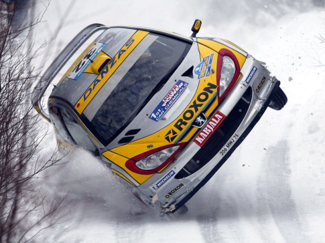

Automotive X Prize
The Automotive X Prize will award substantial cash prizes to the winning teams of a long-distance stage race. So is it replicating the World Rally Championship then? Not quite. The vehicles competing for the Automotive X Prize have to be environmentally friendly, production-capable and exceed 100mpg. I doubt any World Rally Cars will qualify!
Peugeot 206 World Rally CarEven on two wheels it's still unlikely to qualify for the Automotive X Prixe
License: CC BY-SA 2.0, Christopher Batt
The aim of the Automotive X Prize is to kick-start a movement toward sustainable motoring by encouraging innovative solutions to make cars significantly more efficient and cleaner. The competition is part of the X Prize Foundation's focus on monetary prizes to address "...important challenges facing humanity," following the success of the first Ansari X Prize, won by Burt Rutan's SpaceShipOne in 2004.
Based on the draft proposal, the key elements of the Automotive X Prize are:
- Over US$10,000,000 prize fund to be split between the various races and vehicle classes.
- Prize money will be awarded to teams that win a qualifying stage race and the Grand Prize Final stage race, scheduled for 2009. The final race could see a "Cannonball Run"-esque coast-to-coast trek across mainland USA. The stage races will incorporate typical driving conditions spanning varied terrain and weather.
- Vehicles in the Mainstream class must accommodate at least 4 people and have at least 4 wheels. Additionally they must have similar acceleration, top speed, comfort features (e.g., heater, air conditioning) and safety features as existing vehicles such as a Honda Civic.
- Vehicles in the Alternative class must accommodate at least 2 people and have similar acceleration and top speed to existing vehicles. With fewer constraints the hope is that the Alternative class will "...encourage wider-ranging innovations in vehicle design..."
- Vehicles must achieve over 100mpg, or the equivalent if not using gasoline.
- Emission of greenhouse gases (CO2 equivalent) must be less than 200g/mi. A car averaging 28.2mpg emits approximately 387g/mi.
- Vehicles must be production capable, as judged by accompanying business plans, to support at least 10,000 vehicles/year.
Automotive X Prize designers will have to use Computer-Aided Engineering (CAE) tools to analyze their vehicle designs. It is a requirement of the competition that to enter the Grand Prize Final entrants must submit 3D Computer-Aided Design (CAD) model-based crash simulation results. Though not a requirement, there is a high probability that teams will use other CAE tools such as Computational Fluid Dynamics (CFD) to analyze airflow over their vehicles with a view to minimizing air resistance or drag in order to conserve fuel. While CAE tools can't predict every nuance of real world physics, they are a cost effective means to eliminate design uncertainty, especially during the concept design phase.
 Honda Insight
Honda Insight
What are the final vehicles likely to look like? The more conventional designs are likely to resemble the Honda Insight (discontinued in 2006), with its low-drag streamlined teardrop shape, lightweight aluminum body, hybrid engine, continuously variable transmission (CVT), and low rolling-resistance tires. Maybe it's no coincidence that Ben Knight, vice-president of automotive engineering for Honda R & D Americas, is one of the few representatives from the large automotive manufacturers helping draft the guidelines for the Automotive X Prize.
Feedback
Questions? Ideas? Problems?

Recent blog posts
- CFD Simulates Distant Past
- Background on the Caedium v6.0 Release
- Long-Necked Dinosaurs Succumb To CFD
- CFD Provides Insight Into Mystery Fossils
- Wind Turbine Design According to Insects
- Runners Discover Drafting
- Wind Tunnel and CFD Reveal Best Cycling Tuck
- Active Aerodynamics on the Lamborghini Huracán Performante
- Fluidic Logic
- Stonehenge Vortex Revealed as April Fools' Day Distortion Field
 Get our Blog feed
Get our Blog feed
Comments
Team Velozzi Possible Automotive X Prize Competitor
AutoblogGreen reports that Team Velozzi is to enter the Automotive X Prize competition with a lithium-ion battery-powered 2 seat sports car. Their concept design appears to draw inspiration from the Ferrari F430.
Start Your Engines
It's official, the Automotive X Prize is a go. Progressive Insurance has stepped in as the title sponsor for the US$10 million competition. The announcement was made on March 20, 2008 at the New York Auto Show. "[A]pplications will be accepted until mid 2008," so you best get motoring.
Top 10 Early Contenders
Popular Mechanics has an interesting article (with pictures) on the Top 10 Early Contenders for the Automotive X Prize.
Results
Preliminary rounds:
The results are in and the winners are: